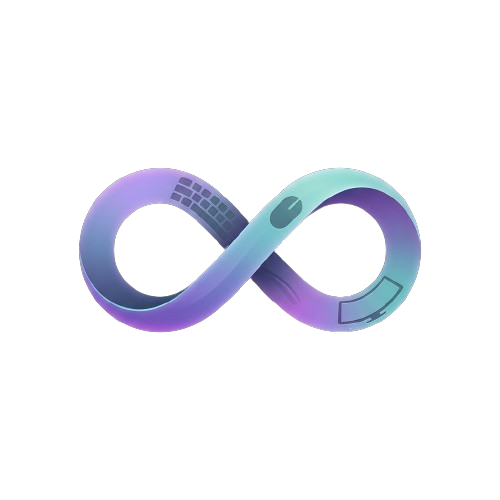

Conduit
A Windows wireless KVM that shares your mouse, keyboard, clipboard, files, and hardware-accelerated video across nearby PCs.

I build AI systems, game projects, and practical tools for problems I want to solve.
A Windows KVM for sharing input, clipboard, files, and video between nearby PCs.
Choose a project to see what it does and where to explore it.
A Windows wireless KVM that shares your mouse, keyboard, clipboard, files, and hardware-accelerated video across nearby PCs.

A few stops behind the projects: transit design, computer science, research, and teaching.